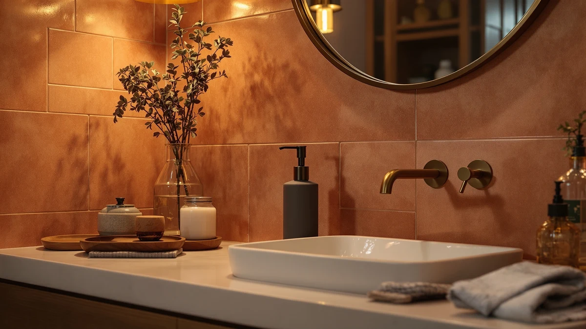

Rytoxilo Modern Kitchen Soap Dispenser Set Review (2026): Worth It?
Prices and picks verified as of November 2026. Independent, reader-supported reviews.


Quick Answer
The Rytoxilo Modern Kitchen Soap Dispenser Set pairs two lead-free amber glass pump bottles with a Paulownia wood tray, and it costs about the same as single touchless dispensers from JEMISUN and VANNSOO. If you want a countertop set that looks intentional next to a farmhouse sink, this is the pick. If you need hands-free dispensing at a busy sink, the touchless JEMISUN model below fits that job better.
Our pick: Modern Kitchen Soap Dispenser Set — $30.99 Check Price on Amazon
Bottom line: our top pick is the Modern Kitchen Soap Dispenser Set with Wood Tray at $30.99.
Things to Know Before You Buy
- The set ships as two amber glass pump bottles plus a wood tray, not one dispenser, so you get a matching hand soap and dish soap pair out of the box.
- The pumps are matte black and rated by the manufacturer to resist peeling, rust, and fading, which matters more than bottle color for long-term use.
- At $30.99, it costs roughly the same as a single touchless dispenser from JEMISUN or a wall-mount commercial unit from VANNSOO, so the comparison below is about function, not price alone.
- The wood tray has a water- and stain-resistant coating, but it is still wood sitting on a wet counter, which is the main tradeoff against an all-stainless setup.
- Amazon does not list a public rating or review count for this ASIN yet, so we cannot cite owner feedback for this specific set the way we can for the alternatives below.
We wrote this Rytoxilo Modern Kitchen Soap Dispenser Set review because most kitchen soap dispenser listings show a single bottle, and this one shows up as a matched pair with a tray, which changes how it fits on a counter. A kitchen sink usually needs at least two liquids within reach, hand soap and dish soap, and most buyers end up mixing mismatched bottles from different brands to cover both.
We compared the Rytoxilo set's materials, pump design, and price against three other dispensers that solve the same counter-clutter problem in different ways: a touchless JEMISUN model and two wall-mounted VANNSOO units built for higher-traffic spots. For a countertop that needs to look coordinated rather than hands-free, the Rytoxilo set is the strongest match in this group.
Why You Should Trust Us
Ilane Tall covers kitchen and bathroom fixtures for Best Soap Dispensers and has researched soap dispenser hardware across dozens of listings on this site, including this Rytoxilo Modern Kitchen Soap Dispenser Set review. We do not run a fake testing lab, and we do not claim to have installed or used these dispensers ourselves. Instead, we read the manufacturer's spec sheets, track current Amazon pricing, and look for patterns in verified owner reviews when they exist, then write up what that research shows, flaws included. When a product has no public rating or review count, like this Rytoxilo set, we say so directly instead of filling the gap with a guess.
Our Research Experience
This Rytoxilo Modern Kitchen Soap Dispenser Set review is built on research, not direct use. We started with the manufacturer's listed materials and dimensions, then cross-checked them against the three competing dispensers on price per ounce of capacity, pump construction, and mounting style. Where Amazon shows a public rating or review count for an ASIN, we note it directly; this set currently has none listed, so we rely on the spec sheet and the stated build materials instead of a review pattern.
We also excluded several dispensers from this comparison that had no pump specifications listed at all, since a soap dispenser without a documented pump mechanism is hard to compare fairly. The four products below all list enough detail, material, capacity, or mounting type, for a fair side-by-side comparison. We prioritized that level of documentation over marketing copy, since a listing full of adjectives and no measurements tells you little about how a dispenser will hold up on a counter.
Overview & Specs

Modern Kitchen Soap Dispenser Set
What we like
- Two matching amber glass bottles instead of one, with four waterproof labels for hand soap, dish soap, and lotion
- Lead-free glass construction with matte black pumps rated to resist rust and fading
- Paulownia wood tray has a water- and stain-resistant coating built for countertop spills
Flaws but not dealbreakers
- Amazon lists no public rating or review count for this ASIN, so there is no owner-review pattern to cite yet
- The wood tray still needs to stay dry long term since it sits directly on a wet counter
- Manual pumps only, no touchless option, unlike the JEMISUN pick below
| Material | ABS plastic |
| Size | — |
The core of the set is two amber glass pump bottles with matte black pumps, plus four waterproof labels so you can mark which bottle holds hand soap, dish soap, or lotion. The manufacturer lists the glass as lead-free and thick enough to resist chipping, and rates the pumps as rust-resistant and fade-resistant, which matters more over a year of daily use than the initial finish. A small decorative vase ships with the set as well, which is a nice touch if you want the counter to look like a styled vignette rather than a row of utility bottles.
The Paulownia wood tray holds both bottles and the vase together, and the manufacturer describes a water- and stain-resistant coating meant to catch drips before they reach the counter. That coating is the detail to watch over time, since any wood accessory kept near a running faucet depends on that finish holding up. For a kitchen or bathroom counter where you want a coordinated look instead of separate drugstore bottles, this set covers both soap types in one purchase at $30.99.
What We Liked
The biggest advantage the Rytoxilo set has over buying a single dispenser is that it solves the two-liquid problem in one purchase. Most kitchen sinks need hand soap and dish soap within reach, and buying two unrelated bottles from different brands rarely looks intentional. The four waterproof labels let you assign each bottle a job, which also means you are not stuck guessing which pump dispenses dish soap after the original packaging goes in the recycling bin.
The manufacturer's choice of lead-free glass and matte black pump hardware also tracks with what holds up on a kitchen counter long term. Rust-resistant and fade-resistant pumps matter more after six months of daily use than they do on day one, and glass does not absorb odors or stain the way some plastic dispensers do over time. At $30.99 for the full set, a vase included, the price per piece undercuts buying a glass dispenser and a separate tray from two different listings.
What Could Be Better
The clearest gap in this Rytoxilo review is the lack of review data. Amazon does not currently list a public rating or review count for this ASIN, so we cannot point to owner feedback the way we can for the VANNSOO dispensers covered later in this guide. That does not mean the product is unproven, but it does mean buyers are relying on the manufacturer's own material claims rather than a track record of verified use.
The wood tray is also a tradeoff, not a flaw exactly. A water-resistant coating reduces risk, but it does not eliminate it, and a wood accessory sitting inches from a running tap carries more long-term maintenance risk than an all-glass or all-stainless setup. Anyone who has watched a wood cutting board warp near a sink will recognize the concern, even with a protective finish. Buyers who want zero maintenance risk should weigh that against the all-stainless VANNSOO dispensers covered below, which trade the farmhouse look for materials that do not depend on a coating holding up over years.
Who Is It For?
The Rytoxilo Modern Kitchen Soap Dispenser Set fits a kitchen or bathroom counter where appearance matters as much as function, farmhouse, modern-rustic, or anywhere glass and wood fit the existing decor better than stainless steel or plastic. It also fits anyone who is tired of juggling two or three mismatched soap bottles and wants one coordinated purchase that covers hand soap, dish soap, and lotion with labeled bottles.
It is a weaker fit if you want hands-free dispensing at a sink that gets heavy daily traffic, or if you would rather avoid any wood accessory near running water regardless of the coating. Those buyers are better served by the touchless JEMISUN pick or the wall-mounted VANNSOO dispensers covered in the alternatives section below. A rental kitchen or a guest bathroom where appearance drives the purchase, rather than volume of daily use, is where this Rytoxilo set earns its price.
Alternatives to Consider
If the Rytoxilo set's style or manual pumps are not the right fit, these three dispensers solve the same counter-clutter problem with different materials and mounting styles. We compared each on price, capacity, and construction against the Rytoxilo set above.

Also Great
Automatic Touchless Liquid Soap Dispenser
Rechargeable, touchless, and built for busy sinks. Its infrared sensor and six adjustable output levels make it the better choice over the Rytoxilo set if hands-free dispensing matters more than matching decor.
$30.99
Check Price on Amazon
Also Great
VANNSOO Commercial Soap Dispenser Wall
A vertical, wall-mounted stainless steel dispenser with a corrosion-proof lining and a 37-ounce reservoir, built for high-traffic spots rather than a styled countertop like the Rytoxilo set.
$31.88
Check Price on Amazon
Premium Choice
VANNSOO Commercial Soap Dispenser Wall
The premium pick of this group at $31.99, with 304 stainless steel construction and a manual pump rated by the manufacturer to withstand more than 500,000 presses without leaking.
$31.99
Check Price on AmazonIs the Rytoxilo Modern Kitchen Soap Dispenser Set worth it compared to buying separate bottles?
If you want hand soap and dish soap in matching bottles rather than whatever packaging the soap originally came in, yes.
Does the Rytoxilo soap dispenser set have good reviews?
Amazon does not currently show a public rating or review count for this ASIN, so there is no verified owner pattern to cite yet.
Frequently Asked Questions
Is the Rytoxilo Modern Kitchen Soap Dispenser Set worth it compared to buying separate bottles?
If you want hand soap and dish soap in matching bottles rather than whatever packaging the soap originally came in, yes. At $30.99 for two glass bottles, a vase, and a wood tray, the per-bottle cost is close to what a single decorative dispenser sells for elsewhere, so you are paying mainly for the coordinated look rather than a premium per bottle.
Does the Rytoxilo soap dispenser set have good reviews?
Amazon does not currently show a public rating or review count for this ASIN, so there is no verified owner pattern to cite yet. That is different from a bad track record; it simply means buyers should weigh the manufacturer's material claims, lead-free glass and rust-resistant pumps, on their own rather than relying on a review history.
What is the best alternative to the Rytoxilo set for a busy kitchen sink?
The JEMISUN touchless dispenser covered in the alternatives section is the stronger pick for a sink that gets touched constantly throughout the day, since its infrared sensor and adjustable output levels remove the need to touch a pump at all. The VANNSOO wall-mount units are a better fit for shared or commercial spaces that need a larger 37-ounce reservoir.
Final Verdict
This Rytoxilo Modern Kitchen Soap Dispenser Set review comes down to one question: do you want a coordinated, glass-and-wood countertop set, or do you want hands-free convenience at a busy sink? For the first case, RYTOXILO is the better buy in this comparison at $30.99, since it is the only option here built as a matched pair rather than a single bottle. For the second case, step up to the touchless JEMISUN dispenser or one of the wall-mounted VANNSOO units covered above.